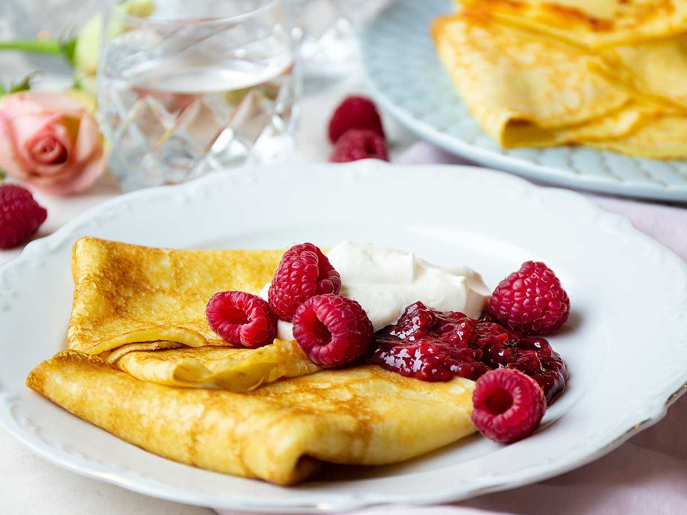

Home🏡
Recept 👨🏻🍳
Veckomeny 📅

Pannkakor
🍳 6 stycken
⏳ 30 min
🎂 Bak och dessert
Pannkakor är gött!
Ingredienser
2 1/2 dl vetemjöl
1/2 tsk salt
6 dl mjölk
3 ägg
smör (till stekning)
sylt, bär eller frukt till servering
Gör så här
En sats på 4 portioner blir 8-10 pannkakor beroende på storleken på stekpannan.
Blanda mjöl och salt i en bunke. Vispa i hälften av mjölken och vispa till en slät smet. Vispa i resten av mjölken och äggen. Låt smeten vila ca 10 minuter.
Stek tunna pannkakor i lite smör, för varje pannkaka, i en stek- eller pannkakspanna.
Servera med sylt och grädde, bär eller frukt.